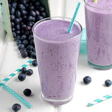

Blueberry Protein Shake

Description
Anyone interested in a meal replacement or meal supplement look no further. Blueberries are loaded with antioxidants and nutrients to keep your body fueled and healthy.
Ingredients:
- Blueberries
- Milk or Milk Substitute
- Protein Powder of your choice
Steps: (Serving Size 1 Person)
- Add the dairy-free milk, blueberries, and powder to a blender. In that order. Blend until smooth. If you prefer a thicker shake colder shake, you can add a couple of ice cubes.